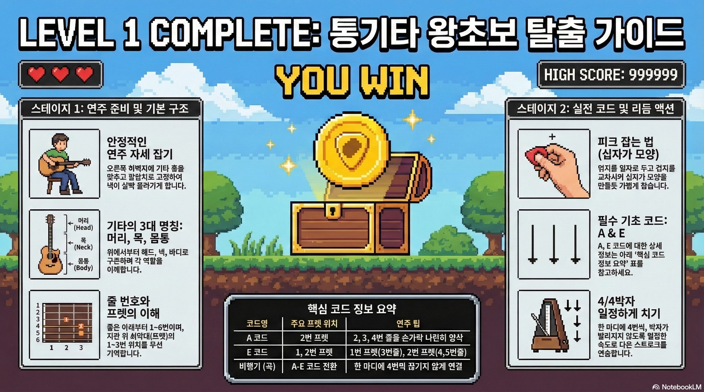
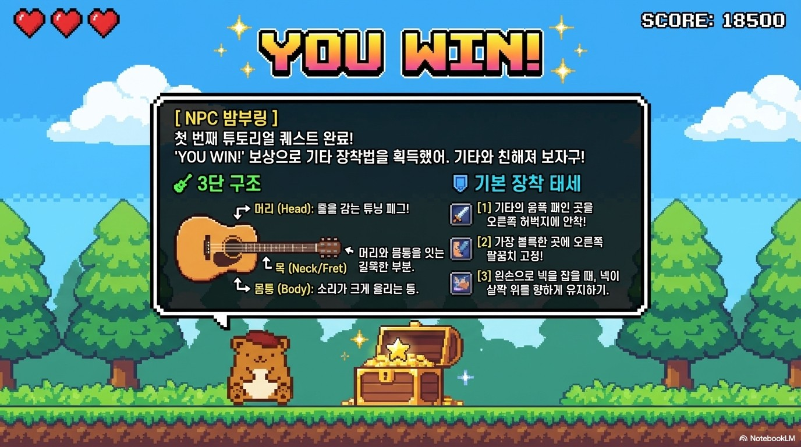
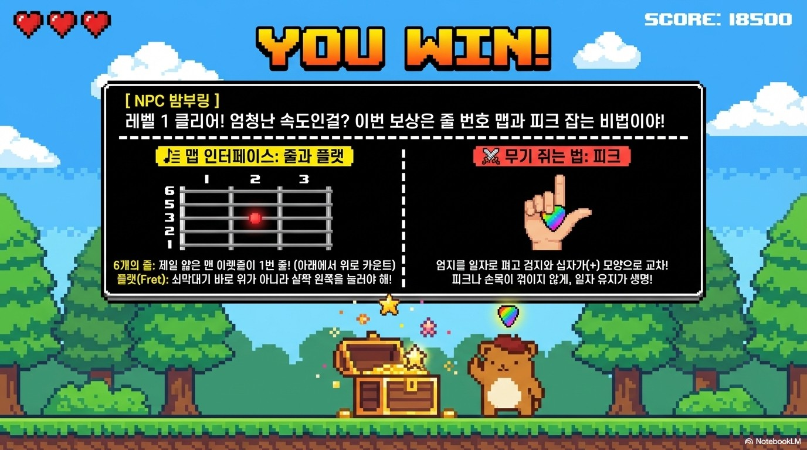
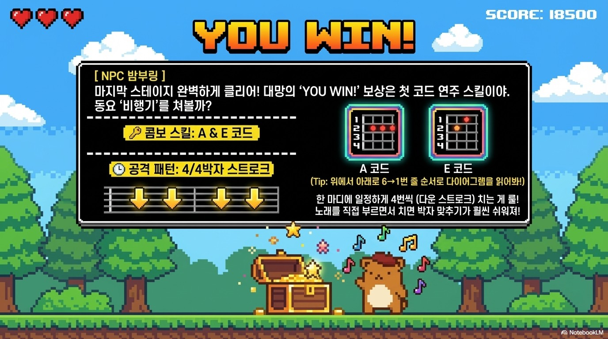
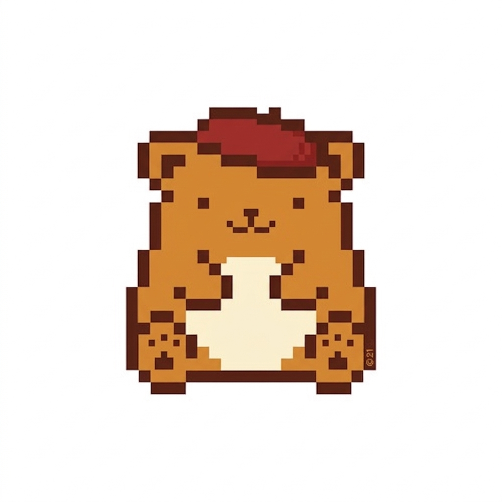

Level 1 Complete
Infographic · 통기타 왕초보 탈출 가이드
(Portfolio / 2026)
매 순간 배우고 새로운 시선을 발견하며 디자인을 만들어 갑니다.
익숙한 것에서도 새로운 가능성을 찾고 낯선 경험 속에서도 배움을
얻습니다.
끊임없이 탐구하고 시도하는 과정을 통해 생각을 구체적인 결과물로
발전시키며
매일 조금씩 더 나은 디자이너로 성장하고자 합니다.
AI 활용 디자인 및 인포그래픽

Infographic · 통기타 왕초보 탈출 가이드

Slide Design · 기타의 3단 구조와 장착 자세

Slide Design · 줄 번호와 피크 잡는 법

Slide Design · A·E 코드와 4/4박자 스트로크

Pixel Character Design
작가와 컬렉터를 연결하는 아트 커머스 웹사이트 기획 및 제작. Figma로 페이지 레이아웃을 설계하고 이를 바탕으로 웹사이트를 구현했습니다.
UI/UX 기획 · Figma 레이아웃 설계 · 웹 구현
지역의 매력을 알리기 위한 콘텐츠를 기획하고, 현장 취재와 인터뷰를 통해 지역 정보를 소개하는 콘텐츠 제작
콘텐츠 기획 · 현장 취재 · 인터뷰 · 사진 촬영 · 블로그 · 숏폼
About / My Approach
순수미술을 전공하며 시각적으로 생각하고 표현하는 방법을 배웠습니다. 이후 콘텐츠 기획과 웹사이트 제작 등 다양한 작업을 경험하며 관심의 범위를 넓혀 왔습니다. 아직 배워야 할 것이 많지만, 새로운 것을 익히고 직접 시도하며 경험을 쌓아 가고 있습니다. 앞으로도 열린 태도로 배우고 성장하며, 맡은 일을 하나씩 제 것으로 만들어 가고 싶습니다.
Stay curious. Keep Growing.